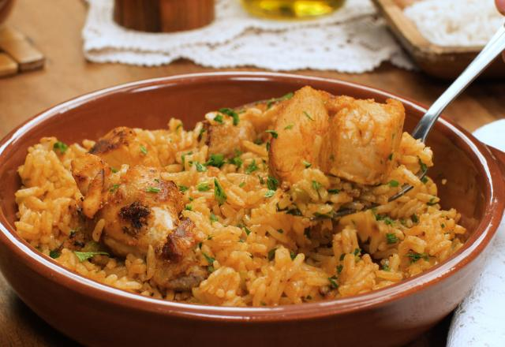
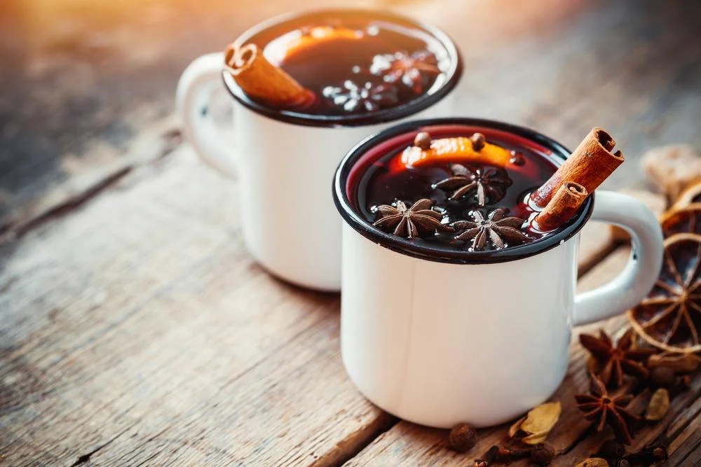
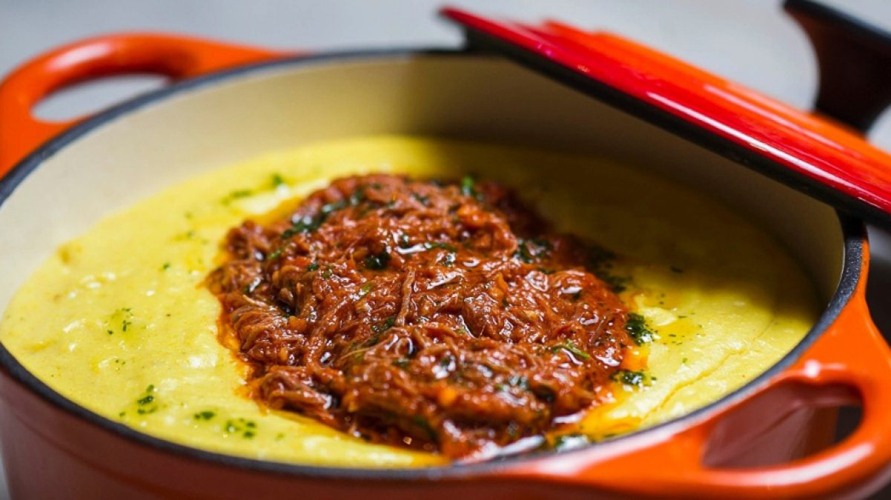

Doce tradicional feito com abóbora e coco ralado, comum nas festas juninas brasileiras.

Preparado com leite e açúcar, é um doce cremoso muito popular em toda a América Latina.

Bolinhas assadas feitas com polvilho e queijo, típicas da culinária mineira.

Feita com milho verde ralado e cozido, pode ser doce ou salgada e é embrulhada na palha do milho.

Prato rústico com arroz e frango caipira, muito consumido no interior do Brasil.

Bebida quente feita com cachaça, gengibre e especiarias, típica de festas juninas.

Prato típico do interior, feito com fubá e servido com molho ou queijo.

Prato tradicional do Paraná, feito com carne cozida por várias horas em panela de barro.